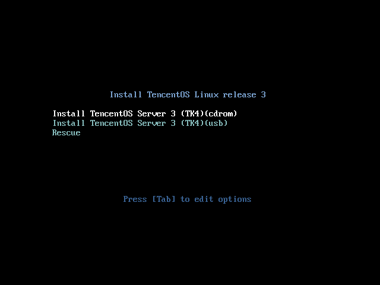
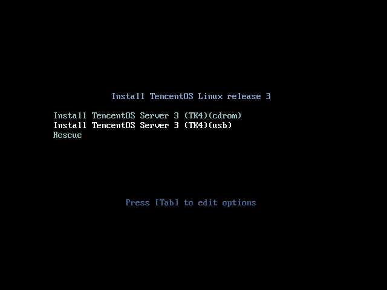
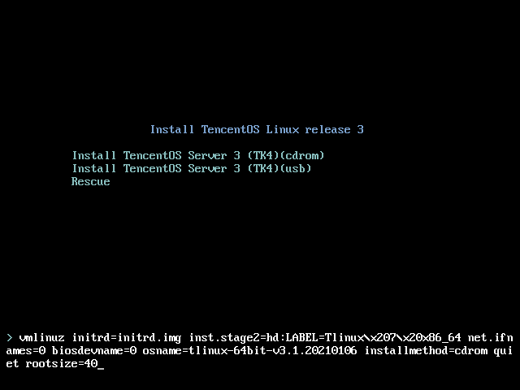
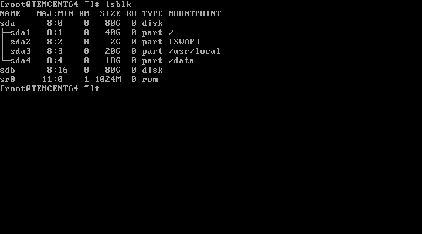
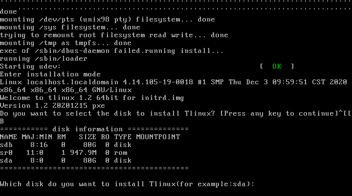
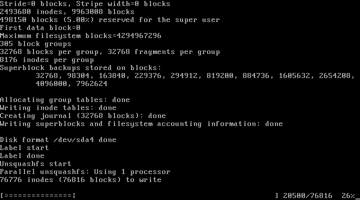
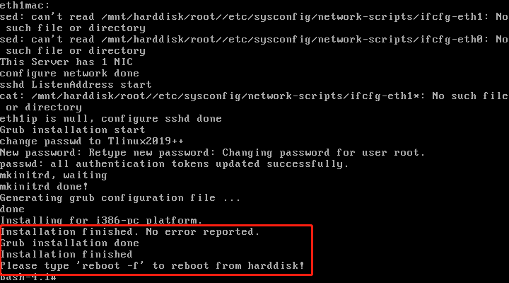
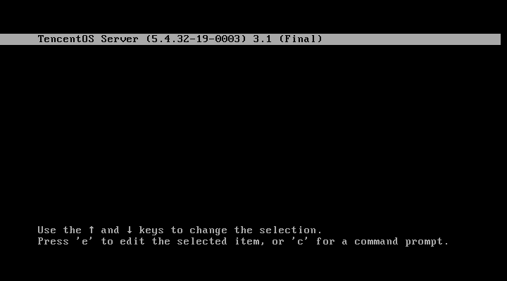

TencentOS Server 操作系统安装指南
安装前准备
安装TencentOS Server 服务器操作系统前，您的服务器需要满足以下要求：
- 服务器接入稳定电源
- 确保服务器至少拥有50GB硬盘空间，4GB内存空间
- 获取安装DVD光盘（需要服务器拥有DVD光驱）或USB安装（需要服务器拥有USB接口）
- 安装前请备份您的硬盘数据，以防数据丢失
- 镜像获取地址：http://mirrors.tencent.com/tlinux/3.1/iso/x86_64/
光盘安装说明
- 插入安装光盘，启动时进入BIOS选择从CDROM驱动器启动
- 进入系统安装选择目录，选择cdrom方式进行安装 
USB安装说明
- 使用UltroISO烧录iso镜像到USB介质中
- 插入USB安装介质，启动时从BIOS选择USB启动
- 进入安装目录，选择从usb安装介质安装操作系统 
调整根分区大小
TencentOS Server 默认的分区大小为:
UEFI模式下，/ 分区21.5G，efi分区512M，/usr/local 分区20G，/data分区为该硬盘剩余空间大小。
Legacy模式下，/ 分区20G，SWAP分区2G，/usr/local 分区20G，/data分区为该硬盘剩余空间大小。
80G的硬盘安装完成后硬盘分区示例如下：
如果需要修改根分区大小，方法如下：
- 进入安装目录，输入tab键，进入cmd命令模式
- 在命令尾部追加 rootsize=40，回车键完成修改，即可调整根分区大小为40GB 
安装完成，可以看到系统根分区已经调整成为40GB。

选择安装路径
TencentOS Server 默认安装在sda盘，同时支持选择安装路径，在服务器存在多个硬盘时，可以选择安装到指定硬盘中。
- 进入安装后，短暂等待，当出现提示时，按任意键即可进入安装选择
- 如果不进行操作，则会在10s后自动安装到sda盘中
- 按下任意键后，出现如图硬盘选择
- 输入sda，系统将会安装到指定sda盘中
- 选择指定硬盘后，系统将自动分区，安装系统镜像 
系统自动安装图例 
安装完成
系统完成安装后会出现图中所示字样，只需重启后即可完成安装。  输入reboot –f 后，正常启动，可以看到系统目录中出现TencentOS Server。 
如何登录
完成安装系统后，进入到登陆界面。
登陆用户：root
默认密码：Tlinux2019++
PDF文档链接：http://mirrors.tencent.com/tlinux/3.1/iso/x86_64/TencentOS-Server-Installation.pdf